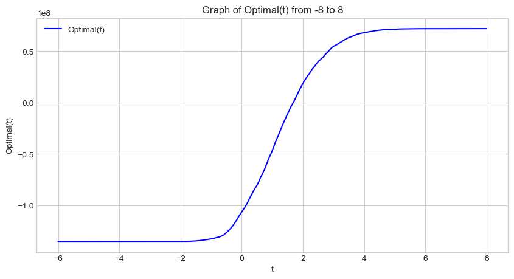

from matplotlib import pyplot as plt
import numpy as np
plt.style.use('seaborn-v0_8-whitegrid')Part A: Grab the Data
We’ll start by loading the data into a dataframe:
import pandas as pd
url = "https://raw.githubusercontent.com/PhilChodrow/ml-notes/main/data/credit-risk/train.csv"
train = pd.read_csv(url)We’ll take a peak at how the data looks:
train.head()| person_age | person_income | person_home_ownership | person_emp_length | loan_intent | loan_grade | loan_amnt | loan_int_rate | loan_status | loan_percent_income | cb_person_default_on_file | cb_person_cred_hist_length | |
|---|---|---|---|---|---|---|---|---|---|---|---|---|
| 0 | 25 | 43200 | RENT | NaN | VENTURE | B | 1200 | 9.91 | 0 | 0.03 | N | 4 |
| 1 | 27 | 98000 | RENT | 3.0 | EDUCATION | C | 11750 | 13.47 | 0 | 0.12 | Y | 6 |
| 2 | 22 | 36996 | RENT | 5.0 | EDUCATION | A | 10000 | 7.51 | 0 | 0.27 | N | 4 |
| 3 | 24 | 26000 | RENT | 2.0 | MEDICAL | C | 1325 | 12.87 | 1 | 0.05 | N | 4 |
| 4 | 29 | 53004 | MORTGAGE | 2.0 | HOMEIMPROVEMENT | A | 15000 | 9.63 | 0 | 0.28 | N | 10 |
Part B: Explore The Data
Create at least two visualizations and one summary table in which you explore patterns in the data. You might consider some questions like:
How does loan intent vary with the age, length of employment, or homeownership status of an individual?
Which segments of prospective borrowers are offered low interest rates? Which segments are offered high interest rates?
Which segments of prospective borrowers have access to large lines of credit?
Summary table
The following table shows the means of each quantitative column, grouped by loan_grade, descending from the best grade ‘A’, denoting confidence that the recipient will pay back the loan, to the worst grade ‘G’, denoting the least confidence that the recipient will pay back the loan. We can see that loan as percent of income increases as the loan grade decreases. Loan amount increases as the loan grade decreases. Loan interest rate increases as the loan grade decreases.
Interesting: the lower grades have a higher income.
I’ve selected just the columns with quantitative information and cleaned the data by removing rows with missing values.
quant_col = ["loan_grade", "loan_percent_income", "person_age", "person_income", "person_emp_length", "loan_amnt", "loan_int_rate", "cb_person_cred_hist_length"]
train_quant = train[quant_col].dropna()
train_quant.groupby(["loan_grade"]).aggregate("mean") #, "person_home_ownership"| loan_percent_income | person_age | person_income | person_emp_length | loan_amnt | loan_int_rate | cb_person_cred_hist_length | |
|---|---|---|---|---|---|---|---|
| loan_grade | |||||||
| A | 0.152629 | 27.682077 | 66773.007816 | 5.122533 | 8555.884885 | 7.338368 | 5.730560 |
| B | 0.173846 | 27.673949 | 66662.091096 | 4.750069 | 10031.025007 | 11.003273 | 5.766007 |
| C | 0.168928 | 27.792667 | 66416.633130 | 4.402663 | 9322.102794 | 13.456237 | 5.855303 |
| D | 0.188833 | 27.853112 | 64555.473908 | 4.699652 | 10821.646695 | 15.358261 | 5.861229 |
| E | 0.204190 | 27.732955 | 70868.349432 | 4.458807 | 12929.083807 | 17.047344 | 5.747159 |
| F | 0.220982 | 28.564417 | 80756.546012 | 4.239264 | 15395.705521 | 18.519018 | 6.214724 |
| G | 0.243409 | 28.181818 | 77342.477273 | 5.954545 | 17384.659091 | 20.230000 | 6.500000 |
Let’s load our visualization library:
import seaborn as snsVisualization 1
This visualization shows the effect of loan_grade on loan_amnt in two cases - if the person defaulted on their loan or not. We can see that
sns.boxplot(train, x="cb_person_default_on_file", y="loan_amnt", hue_order=["A", "B", "C", "D", "E", "F", "G"], hue="loan_grade", palette="Set2", fliersize=0.5)
Visualization 2
Here we visualize a scatterplot where loan percent income is on the x-axis, and loan interest rate is on the y-axis. The color of the data corresponds to the loan grade given by the bank.
We can see that loan interest rate has a high correlation to loan grade - the higher the interest rate, the lower the loan grade.
order_loan_grade = ["A", "B", "C", "D", "E", "F", "G"]
sns.scatterplot(train, x="loan_percent_income", y="loan_int_rate", hue="loan_grade", hue_order=order_loan_grade)
Part C: Build a Model
We’re going to use cross validation to score all combinations of features to find the best ones to use in our model.
Data Preparation
In order to find the optimal variables for a model, we need to prep the data - specifically dropping rows with NAs and using one-hot encoding to turn the categorical variables into numerical ones.
train = train.dropna()
from sklearn.preprocessing import LabelEncoder
le = LabelEncoder()
le.fit(train["loan_status"])
def prepare_data(df):
y = le.transform(df["loan_status"])
df = df.drop(["loan_status"], axis = 1)
df = 1*pd.get_dummies(df)
return df, y
X_train, y_train = prepare_data(train)If we check how our data looks, we can see each categorical variable now is represented by multiple columns with binary values.
X_train.head()| person_age | person_income | person_emp_length | loan_amnt | loan_int_rate | loan_percent_income | cb_person_cred_hist_length | person_home_ownership_MORTGAGE | person_home_ownership_OTHER | person_home_ownership_OWN | ... | loan_intent_VENTURE | loan_grade_A | loan_grade_B | loan_grade_C | loan_grade_D | loan_grade_E | loan_grade_F | loan_grade_G | cb_person_default_on_file_N | cb_person_default_on_file_Y | |
|---|---|---|---|---|---|---|---|---|---|---|---|---|---|---|---|---|---|---|---|---|---|
| 1 | 27 | 98000 | 3.0 | 11750 | 13.47 | 0.12 | 6 | 0 | 0 | 0 | ... | 0 | 0 | 0 | 1 | 0 | 0 | 0 | 0 | 0 | 1 |
| 2 | 22 | 36996 | 5.0 | 10000 | 7.51 | 0.27 | 4 | 0 | 0 | 0 | ... | 0 | 1 | 0 | 0 | 0 | 0 | 0 | 0 | 1 | 0 |
| 3 | 24 | 26000 | 2.0 | 1325 | 12.87 | 0.05 | 4 | 0 | 0 | 0 | ... | 0 | 0 | 0 | 1 | 0 | 0 | 0 | 0 | 1 | 0 |
| 4 | 29 | 53004 | 2.0 | 15000 | 9.63 | 0.28 | 10 | 1 | 0 | 0 | ... | 0 | 1 | 0 | 0 | 0 | 0 | 0 | 0 | 1 | 0 |
| 6 | 21 | 21700 | 2.0 | 5500 | 14.91 | 0.25 | 2 | 0 | 0 | 0 | ... | 0 | 0 | 0 | 0 | 1 | 0 | 0 | 0 | 1 | 0 |
5 rows × 26 columns
We will use the combinations function from the itertools package. This will list all the combinations of one discreet variable and two continuous variables. Iterating through all the possible combinations, it will A) score the model using cross validation, and B) return the best combination of columns that performed the best.
from sklearn.linear_model import LogisticRegression
from itertools import combinations
from sklearn.model_selection import cross_val_score
LR = LogisticRegression(max_iter=999)
all_qual_cols = ["person_home_ownership", "loan_intent", "cb_person_default_on_file"]
all_quant_cols = ["person_age", "person_income", "person_emp_length", "loan_amnt", "loan_int_rate", "loan_percent_income", "cb_person_cred_hist_length"]
score = 0
cols_best = []
for qual in all_qual_cols:
qual_cols = [col for col in X_train.columns if qual in col]
for pair in combinations(all_quant_cols, 2):
cols = qual_cols + list(pair)
#fit the models
log_score = cross_val_score(LR, X_train[cols], y_train, cv = 5).mean()
#compare the scores
if log_score > score:
score = log_score
cols_best = cols
#output the best score, along with the corresponding columns
print(score)
print(cols_best)0.8488229950993185
['person_home_ownership_MORTGAGE', 'person_home_ownership_OTHER', 'person_home_ownership_OWN', 'person_home_ownership_RENT', 'person_age', 'loan_percent_income']Looks like the best features to use are: loan_intent, person_age, and loan_percent_income
LR = LogisticRegression(max_iter=999999999)
model = LR.fit(X_train[cols_best], y_train)# our weights are now stored in:
model.coef_array([[-7.52981385e-01, -8.75812948e-02, -1.79583155e+00,
2.81498971e-01, -4.00881551e-03, 8.27632650e+00]])X_train[cols_best]| person_home_ownership_MORTGAGE | person_home_ownership_OTHER | person_home_ownership_OWN | person_home_ownership_RENT | person_age | loan_percent_income | |
|---|---|---|---|---|---|---|
| 1 | 0 | 0 | 0 | 1 | 27 | 0.12 |
| 2 | 0 | 0 | 0 | 1 | 22 | 0.27 |
| 3 | 0 | 0 | 0 | 1 | 24 | 0.05 |
| 4 | 1 | 0 | 0 | 0 | 29 | 0.28 |
| 6 | 0 | 0 | 0 | 1 | 21 | 0.25 |
| ... | ... | ... | ... | ... | ... | ... |
| 26059 | 1 | 0 | 0 | 0 | 36 | 0.02 |
| 26060 | 0 | 0 | 0 | 1 | 23 | 0.09 |
| 26061 | 0 | 0 | 0 | 1 | 22 | 0.25 |
| 26062 | 1 | 0 | 0 | 0 | 30 | 0.24 |
| 26063 | 0 | 0 | 0 | 1 | 25 | 0.36 |
22907 rows × 6 columns
Part D: Find a Threshold
Once you have a weight vector w, it is time to choose a threshold t. To choose a threshold that maximizes profit for the bank, we need to make some assumptions about how the bank makes and loses money on loans. Let’s use the following (simplified) modeling assumptions:
If the loan is repaid in full, the profit for the bank is equal to loan_amnt*(1 + 0.25*loan_int_rate)**10 - loan_amnt. This formula assumes that the profit earned by the bank on a 10-year loan is equal to 25% of the interest rate each year, with the other 75% of the interest going to things like salaries for the people who manage the bank. It is extremely simplistic and does not account for inflation, amortization over time, opportunity costs, etc. If the borrower defaults on the loan, the “profit” for the bank is equal to loan_amnt*(1 + 0.25*loan_int_rate)**3 - 1.7*loan_amnt. This formula corresponds to the same profit-earning mechanism as above, but assumes that the borrower defaults three years into the loan and that the bank loses 70% of the principal. These modeling assumptions are extremely simplistic! You may deviate from these assumptions if you have relevant prior knowledge to inform your approach!!
Based on your assumptions, determine the threshold t which optimizes profit for the bank on the training set. Explain your approach, including labeled visualizations where appropriate, and include a final estimate of the bank’s expected profit per borrower on the training set.
Let’s first create a function to calculate the profit from predicted target variables. It will take in the prediction column of 0s and 1s that guesses if a person will default or not, and return the total profit.
def profit(target_col):
return (train["loan_amnt"] * (1 + 0.0025*train["loan_int_rate"])**(10 - 7*target_col) - (1 + 0.7*target_col)*train["loan_amnt"]).sum()
profit(train["loan_status"])18753738.0082548We can see that the total profit is $18,753,738. But our job is to find the threshold t that maximizes this!
First, we’ll turn our scores into a numpy array w for ease
w = np.array(model.coef_)[0]
warray([-7.52981385e-01, -8.75812948e-02, -1.79583155e+00, 2.81498971e-01,
-4.00881551e-03, 8.27632650e+00])Let’s create a function linear_score that computes the weighted score using our 6 predictor columns and weights w
def linear_score(X, w):
return X@wLet’s also create a predict method to guess based off of our threshold:
def predict(w, threshold, df):
scores = linear_score(df, w)
# debug plot
#hist = plt.hist(scores)
#labs=plt.gca().set(xlabel=r"Score $score$", ylabel="Frequency")
return 1*(scores>threshold)We’ll use this function to add a new column into our dataframe of our predictions based off of our threshold. Let’s start off with a guess of 1 as the threshold:
train["prediction"] = predict(w, 1, X_train[cols_best])Let’s see how well our guess does!
(train["prediction"] == train["loan_status"]).mean()0.6271881957480246That reflects how accurate we were - but how about finding the profit from that threshold? That’s ultimately the goal here.
profit(train["prediction"])-46485038.05424925Oof! Looks like this would result in the bank losing over $46 million! Now let’s find a better threshold that allows our bank to make the most profit.
Let’s create a master function optimal that takes in a threshold t and returns the profit
def optimal(t):
return profit(predict(w, t, X_train[cols_best]))
# test it on a threshold of 1
print(optimal(1))-46485038.05424925Now let’s graph this function over the span of possible thresholds
t_values = np.linspace(-6, 8, 200)
optimal_values = [optimal(t) for t in t_values]
# Plotting the function
plt.figure(figsize=(10, 5))
plt.plot(t_values, optimal_values, label='Optimal(t)', color='blue')
plt.title('Graph of Optimal(t) from -8 to 8')
plt.xlabel('t')
plt.ylabel('Optimal(t)')
plt.grid(True)
plt.legend()
plt.show()
Request for feedback:
I’m not sure why the optimal threshold function (with profit on the y-axis) is yielding a sigmoid function. I would assume there should be a local maximum - in this case, the optimal threshold would be infinite, and the bank would accept every loan. I’m extremely doubtful that this is the case, so I’m wondering what I’m doing wrong exactly that’s yielding this graph.
.
.
.
.
.
.
.
.
.
Now we’ll use gradient descent to find the optimal value for the threshold
from scipy.optimize import minimize
init_threshold = 1
#result = minimize(lambda t: optimal(t), x0 = init_threshold, bounds = [(-6, 8)], method='BFGS')
#optimal_threshold = result.x
#print("Optimal threshold: ", result)
#print("Maximum Profit: ", -optimal(optimal_threshold))Part E: Evaluate Your Model from the Bank’s Perspective
Only after you have finalized your weight w vector and threshold t, evaluate your automated decision-process on the test set:
url = "https://raw.githubusercontent.com/PhilChodrow/ml-notes/main/data/credit-risk/test.csv"
train_test = pd.read_csv(url)What is the expected profit per borrower on the test set? Is it similar to your profit on the training set?
Part F: Evaluate Your Model From the Borrower’s Perspective
Now evaluate your model from the (aggregate) perspective of the prospective borrowers. Please quantitatively address the following questions, using the predictions of your model on the test data:
- Is it more difficult for people in certain age groups to access credit under your proposed system?
- Is it more difficult for people to get loans in order to pay for medical expenses? How does this compare with the actual rate of default in that group? What about people seeking loans for business ventures or education?
- How does a person’s income level impact the ease with which they can access credit under your decision system?
Part G: Write and Reflect
Write a brief introductory paragraph for your blog post describing the overall purpose, methodology, and findings of your study. Then, write a concluding discussion describing what you found and what you learned through from this blog post.
Please include one paragraph discussing the following questions:
Considering that people seeking loans for medical expense have high rates of default, is it fair that it is more difficult for them to obtain access to credit? You are free to define “fairness” in a way that makes sense to you, but please write down your definition as part of your discussion.